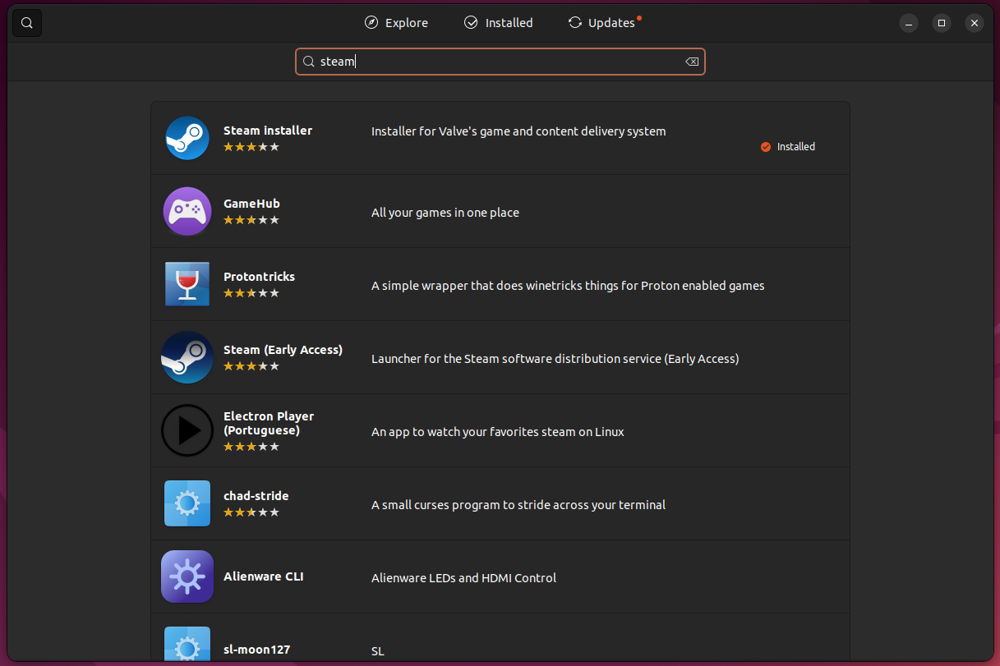
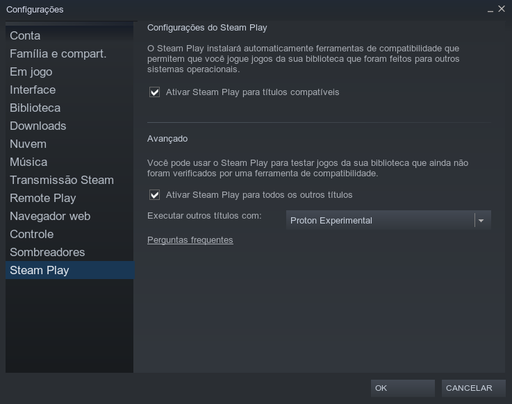

Linux Game On
Steam

...Para começarmos a instalação da Steam Store para o linux pode ser feita de 2 maneiras recomendadas: 1 - via Snapstore(mais fácil) e 2 via Flatpak (requer o terminal e o flatpak instalados). A instalação pela snapstore é fácil é só abrir a loja de aplicativos snap do ubuntu e procurar por jogos ou steam direto que ele vai achar o programa e depois tu pode instalar qualquer uma das duas versões do aplicativo steam pois ele fará update via steam launcher.
...A instalação via Flatpak é mais segura pois executa o programa da steam dentro de uma caixa dentro do linux (sandbox). Isso quer dizer que ele cria um ambiente separado pra ele onde sua instalação não interfere com outros programas e se você desinstalar um flatpak não irá estragar algum programa que possa estar usando alguma biblioteca compartilhada ou recurso. Abra o terminal para instalar via flatpak. Insira o comando sudo add-apt-repository ppa:alexlarsson/flatpak para criar um repositório para o flatpak. Em seguida sudo apt-get update para atualizar os repositórios no seu linux. Insira o comando sudo apt-get install flatpak xdg-desktop-portal para instalar o flatpak. Sabendo queo flatpak está instalado, seguimos com a instalação da Steam: sudo flatpak remote-add --if-not-exists flathub https://flathub.org/repo/flathub.flatpakrepo - para adicionar o repositorio flathub. Depois o comando sudo flatpak install flathub com.valvesoftware.Steam irá instalar a Steam via flathub no flatpak.
...Após configurar sua conta da Steam e abrir o app da Steam você precisa entrar em configurações STEAMPLAY e habilitar a Steamplay pra todos os jogos de windows para poder jogar. Alguns jogos rodam mal, outros não rodam, mas tem muito jogo que roda bem graças ao Proton e ao Steam Deck que foi lançado para jogar os jogos do windows na steam e por isso ganhou verificação de compatibilidade dos jogos windows com a Steamplay. Para atualizar a lista de compatibilidade de jogos conforme vão atualizando o Steam Deck e a Steamplay, é necessario instalar os ultimos lançamentos do Proton GE pelo github, utilizando o aplicativo ProtonUP-QT.
...Na página do github https://github.com/GloriousEggroll/proton-ge-custom baixe as últimas versões do ProtonGE na sua pasta de Downloads. Entre na pasta home no gerenciador de arquivos e aperte ctrl+h para mostrar as pastas ocultas. Procure pela pasta ~/.steam/root/compatibilitytools.d lá você cria uma pasta chamada compatibility tools e copie e extraia a pasta do Proton GE baixado no downloads do github. Após vá para a página https://github.com/DavidoTek/ProtonUp-Qt e baixe o arquivo protonup-qt. Na pasta downloads tu precisa abrir o arquivo com o botão direito e configurar para executar esse arquivo como um programa. Esse aplicativo não precisa instalar só executar ele como programa e já funciona. Você precisa só procurar a pasta da steam nele e mandar instalar o ProtonGE pela pasta .steam/root/compatibility tools.
Guarde o aplicativo Protonup-Qt para instalar atualizações no Lutris também e atualizar o wine e jogar jogar jogos na Epic Store e Gog atualizados. Para atualizar o Lutris é só copiar as pastas do wine e do Proton GE atualizadas e extraídas do site do github do Glorious Eggroll e salvar os arquivos em HOME/.local/share/lutris/wine/runners e depois instalar com o Protonup-qt. Daí entra no Lutris e configure o wine.
...A instalação via Flatpak é mais segura pois executa o programa da steam dentro de uma caixa dentro do linux (sandbox). Isso quer dizer que ele cria um ambiente separado pra ele onde sua instalação não interfere com outros programas e se você desinstalar um flatpak não irá estragar algum programa que possa estar usando alguma biblioteca compartilhada ou recurso. Abra o terminal para instalar via flatpak. Insira o comando sudo add-apt-repository ppa:alexlarsson/flatpak para criar um repositório para o flatpak. Em seguida sudo apt-get update para atualizar os repositórios no seu linux. Insira o comando sudo apt-get install flatpak xdg-desktop-portal para instalar o flatpak. Sabendo queo flatpak está instalado, seguimos com a instalação da Steam: sudo flatpak remote-add --if-not-exists flathub https://flathub.org/repo/flathub.flatpakrepo - para adicionar o repositorio flathub. Depois o comando sudo flatpak install flathub com.valvesoftware.Steam irá instalar a Steam via flathub no flatpak.
...Após configurar sua conta da Steam e abrir o app da Steam você precisa entrar em configurações STEAMPLAY e habilitar a Steamplay pra todos os jogos de windows para poder jogar. Alguns jogos rodam mal, outros não rodam, mas tem muito jogo que roda bem graças ao Proton e ao Steam Deck que foi lançado para jogar os jogos do windows na steam e por isso ganhou verificação de compatibilidade dos jogos windows com a Steamplay. Para atualizar a lista de compatibilidade de jogos conforme vão atualizando o Steam Deck e a Steamplay, é necessario instalar os ultimos lançamentos do Proton GE pelo github, utilizando o aplicativo ProtonUP-QT.
...Na página do github https://github.com/GloriousEggroll/proton-ge-custom baixe as últimas versões do ProtonGE na sua pasta de Downloads. Entre na pasta home no gerenciador de arquivos e aperte ctrl+h para mostrar as pastas ocultas. Procure pela pasta ~/.steam/root/compatibilitytools.d lá você cria uma pasta chamada compatibility tools e copie e extraia a pasta do Proton GE baixado no downloads do github. Após vá para a página https://github.com/DavidoTek/ProtonUp-Qt e baixe o arquivo protonup-qt. Na pasta downloads tu precisa abrir o arquivo com o botão direito e configurar para executar esse arquivo como um programa. Esse aplicativo não precisa instalar só executar ele como programa e já funciona. Você precisa só procurar a pasta da steam nele e mandar instalar o ProtonGE pela pasta .steam/root/compatibility tools.
Guarde o aplicativo Protonup-Qt para instalar atualizações no Lutris também e atualizar o wine e jogar jogar jogos na Epic Store e Gog atualizados. Para atualizar o Lutris é só copiar as pastas do wine e do Proton GE atualizadas e extraídas do site do github do Glorious Eggroll e salvar os arquivos em HOME/.local/share/lutris/wine/runners e depois instalar com o Protonup-qt. Daí entra no Lutris e configure o wine.